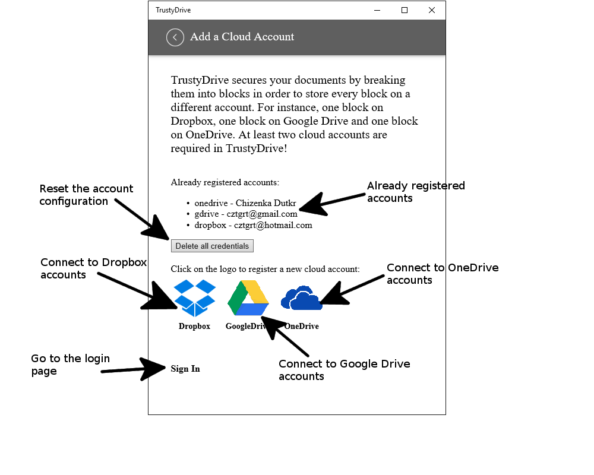
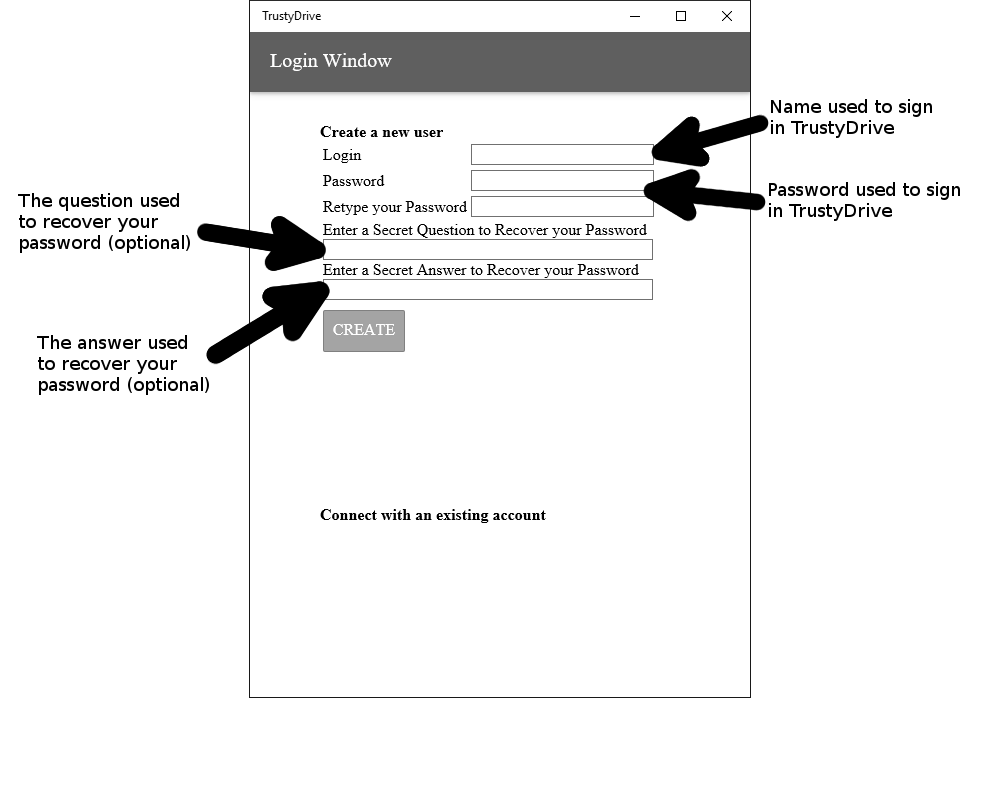
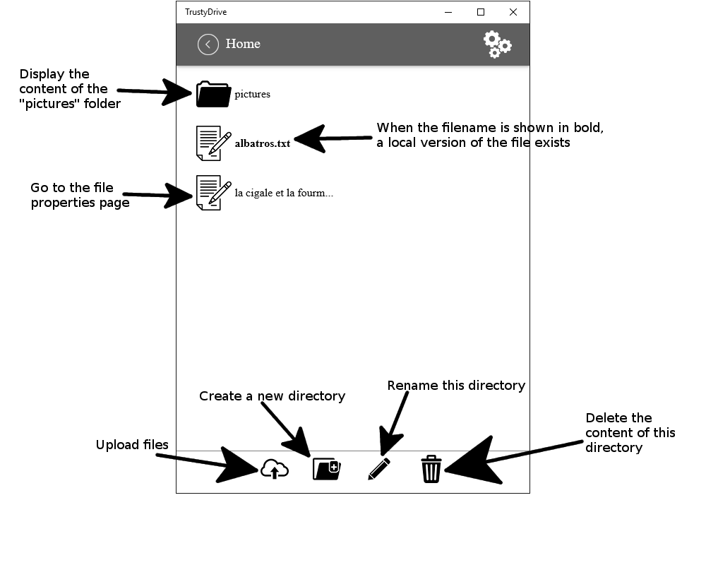
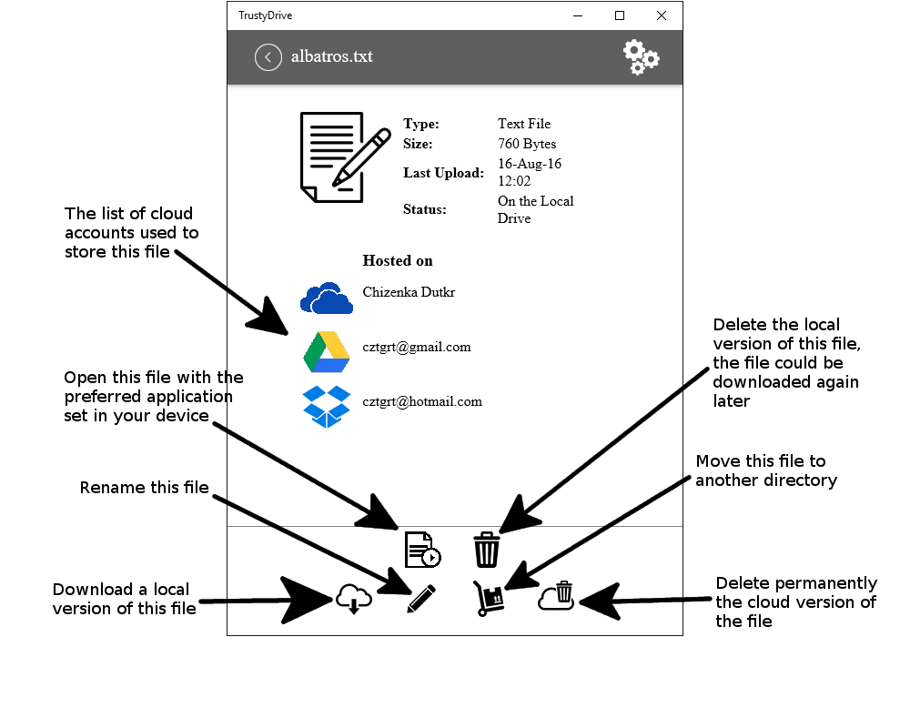

What is TrustyDrive ?
TrustyDrive is an application to save your files on the cloud as Dropbox. Contrary to Dropbox and other cloud
providers, files stored thanks to TrustyDrive can not be read by TrustyDrive or hackers. As TrustyDrive uses
several cloud accounts (Dropbox, Google Drive, Microsoft OneDrive), you can verify that TrustyDrive files are
unreadable.TrustyDrive does not collect any information
TrustyDrive protects your files by using several cloud providers
TrustyDrive is easy to use
-
See on YouTube" />
-
See on YouTube" />
-
See on YouTube" />
-
See on YouTube" />
Read the FAQ